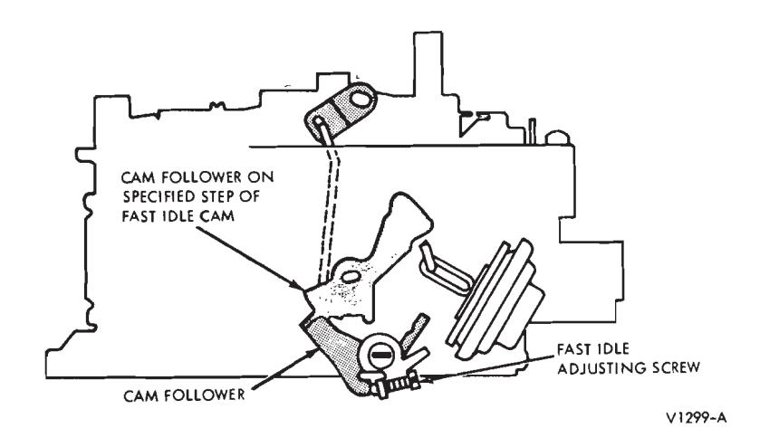
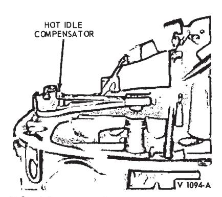
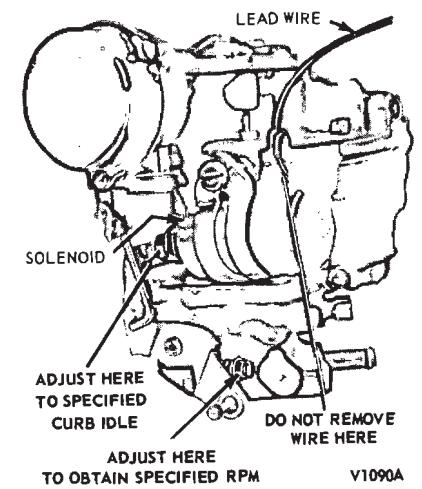
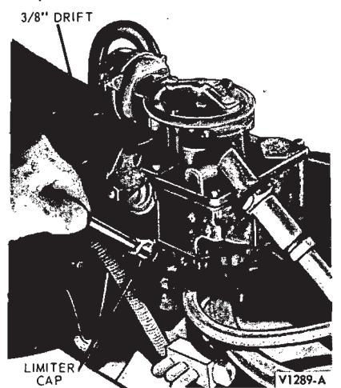
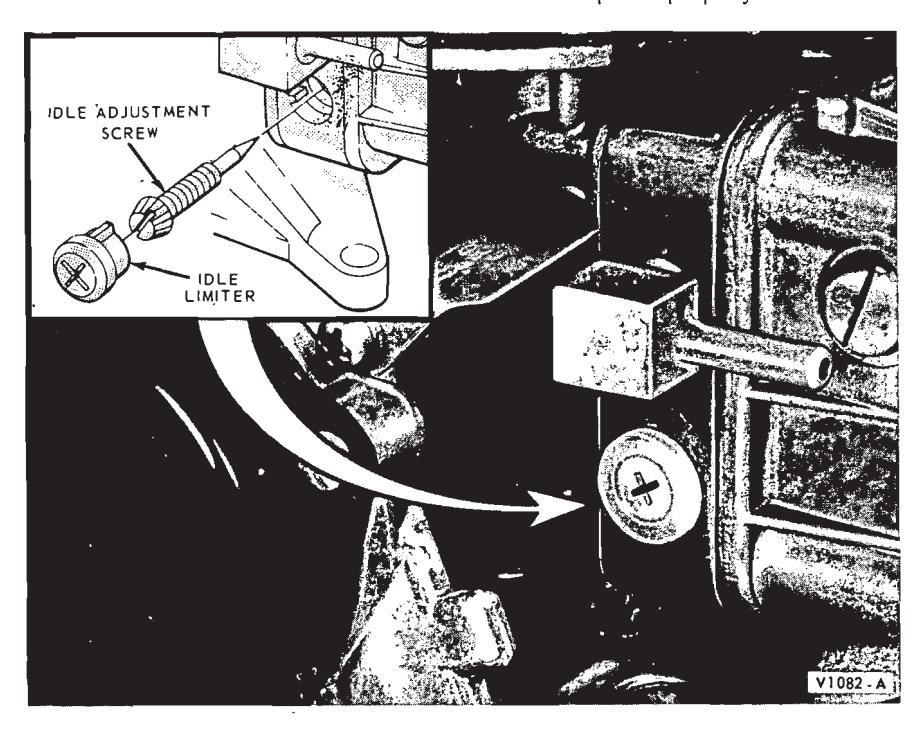
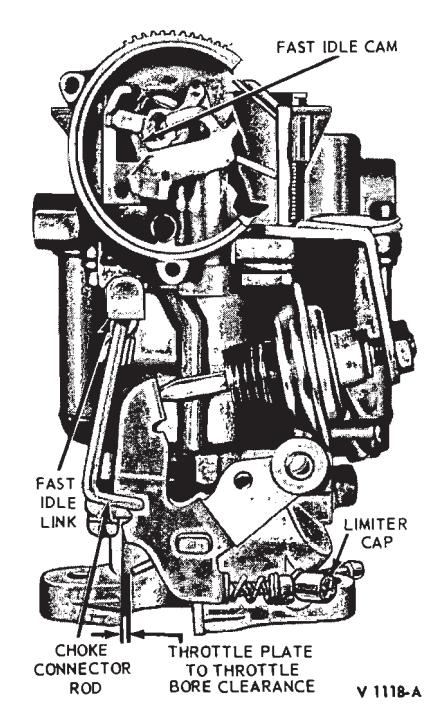
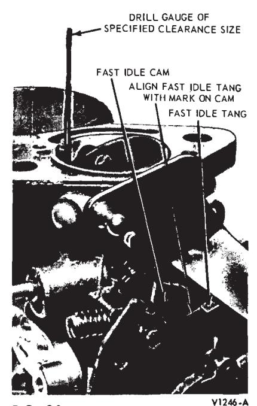
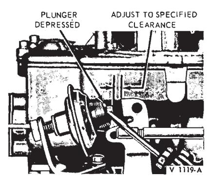
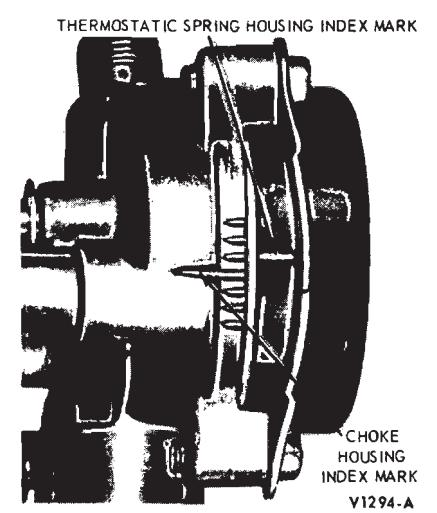

General Fuel System Service · 23-01-07
The use of the exhaust gas analyzer is recommended only after the Normal Fuel Setting Procedures and Additional Idle Speed and Fuel Mixture Procedures have been performed and the engine condition is still not satisfactory.

Fig. 14 — Fast Idle Speed Adjustment—Rochester Model 4 MV

Fig. 15 — Hot Idle Compensator
-
Connect a Rotunda Model ARE 27-56 U or 76 Exhaust Gas Analyzer, or equivalent A/C-powered unit, in accordance with instructions provided by the manufacturer. All exhaust gas analyzers must be checked for proper calibration. Rotunda analyzers must have Certified Calibration identification on the face of the instrument.
-
On a Thermactor-equipped vehicle, disconnect the Thermactor pump air supply hose at the air pump or the check valve(s). Do not adjust for the drop in engine idle speed, which occurs when the air supply hose is disconnected. Note the amount of rpm drop for use in step 4.
-
Observe the reading obtained on the exhaust gas analyzer. The analyzer reading must be taken with the air cleaner installed. Refer to the specifications for the specified minimum air-fuel ratio.
-
Turn the idle mixture adjusting screw(s) as required within the range of the idle limiter until the specified air-fuel ratio is obtained (on 2- and 4-V carburetors, turn the screws an equal amount). The analyzer reading must be obtained with the air cleaner installed. Correct for any changes in engine idle speed immediately as the idle mixture screw(s) are turned. (Refer to the drop in idle rpm obtained when the Thermactor air pump hose(s) were disconnected in step 2, then correct the idle speed to the rpm noted.) Allow at least 10 seconds following each idle mixture screw adjustment for the analyzer reading to properly respond and stabilize.

Fig. 16 — Carter Model YF 1-V With Solenoid Throttle PositionerVerify the analyzer reading. Thermal conductivity exhaust gas analyzers will give an erroneously rich reading if the air-fuel mixture is extremely lean. To check for this condition, partially hand choke the carburetor, or rapidly open-and-close the throttle three or four times, to enrich the airfuel mixture. The analyzer meter will reflect the momentary rich condition, then will deflect in the lean direction as the rich condition subsides, and will gradually return to a richer reading as the excessively lean air-fuel ratio is produced. Vehicles with an automatic transmission must be in Neutral while this is being done.
-
If the air-fuel ratio is to specifications, and the various engine systems are functioning correctly, no further adjustments should be made.
If the air-fuel ratio is not to specifications, as shown by the analyzer reading, it may be corrected by altering the controlled limits of the carburetor idle fuel system. Refer to Removal and Installation of Idle Limiter Caps.

Fig. 17 — Idle Limiter Installation—Carter Carburetors
Removal and Installation of Idle Limiter Caps
-
Remove the plastic limiter caps by cutting with side-cutter pliers and knife. After the cut is made, carefully pry the limiter apart. On some carburetors, it may be necessary to remove the carburetor to remove the limiter.
On Holley carburetors, pry the caps off with a screwdriver.
-
After the limiters are removed, set the carburetor to the correct idle air-fuel ratio, using the exhaust gas analyzer.
-
When the idle air-fuel ratio is within specifications, install a colored plastic service limiter cap.
When installing the limiter cap (Figs. 17 and 18), use care not to turn the idle mixture screw with the cap. Position the cap so that it is in the maximum counterclockwise position with the tab of the limiter against the stop on the carburetor.
The idle mixture adjusting screw will then be at the maximum allowable outward, or rich, setting.
To install the service limiter cap, use a straight, forward pushing force with thumb pressure or a 3/8-inch drift or socket wrench extension.
-
Recheck the air-fuel ratio with the air cleaner installed, using the exhaust gas analyzer to make sure the limiter caps are properly installed.
Fast Idle Adjustment
The fast idle adjusting screw (Figs. 11 through 14) contacts one edge of the fast idle cam. The cam permits a faster engine idle speed for smoother running when the engine is cold during choke operation. As the choke plate is moved through its range of travel from the closed to the open position, the fast idle cam pick-up lever rotates the fast idle cam. Each position on the fast idle cam permits a slower idle rpm as engine temperature rises and choking is reduced.
Make certain the curb idle speed and mixture are adjusted to specification before attempting to set the fast idle speed.
- With the engine operating temperature normalized (hot), air cleaner removed and the tachometer attached, manually rotate the fast idle cam until the fast idle adjusting screw rests on the specified step of the cam.
- Turn the fast idle adjusting screw inward or outward as required to obtain the specified fast idle rpm.
Carter Model YF 1-V
The carburetor must be removed from the engine to check or correct the fast idle speed adjustment.
-
Open the throttle plate and hold the choke plate fully closed to allow the fast idle cam (Fig. 19) to revolve to the fast idle position.

Fig. 18 — Idle Limiter Installation—Holley 4150-C 4-V
Fig. 19 — Fast Idle Speed Adjustment—Carter Model YF
Fig. 20 — Throttle Plate Clearance—Carter Model RBS 1-V
Fig. 21 — Typical Anti-Stall Dashpot Adjustment -
Close the throttle and use a drill with a diameter equal to the specified clearance to check the clearance between the throttle plate and throttle body bore (Fig. 19). To adjust the clearance, bend the choke connector rod in a direction to open or close the throttle as required.

Fig. 22 — Automatic Choke Thermostatic Spring Housing Adjustment
Carter Model RBS 1-V
The fast idle speed is determined by the fast idle linkage setting and the specified throttle plate clearance.
The carburetor must be removed from the engine to check or correct the fast idle throttle plate clearance speed adjustment.
Fast Idle Linkage
- Fully close the choke plate.
- Align the fast idle tang on the throttle lever with the index mark on the fast idle cam.
- At this position, the choke connector rod end should be at the top end of the slot in the fast idle cam. To adjust, bend the choke connector rod at the offset portion as required.
Throttle Plate Clearance
- Align the fast idle tang on the throttle lever with the index mark on the fast idle cam. Use a drill with a diameter equal to the specified clear- ance between the throttle plate and the throttle bore at the idle port side to check the clearance (Fig. 20).
- To adjust for the specified clearance, bend the tang on the throttle lever to increase or decrease the throttle plate clearance as required.
Anti-stall Dashpot
- With the engine idle speed and mixture properly adjusted, and the engine at normal operating temperature, loosen the anti-stall dashpot lock nut (Fig. 21).
- Hold the throttle in the closed position and depress the plunger with a screwdriver blade. Measure the clearance between the throttle lever and the plunger tip. Turn the antistall dashpot in a direction to provide the specified clearance between the tip of the plunger and the throttle lever. Tighten the locknut to secure the adjustment.
Automatic Choke Thermostatic Spring Housing Adjustment
The automatic choke has an adjustment to control its reaction to engine temperature. By loosening the clamp screws that retain the thermostatic spring housing to the choke housing, the spring housing can be turned to alter the adjustment. Refer to the specifications for the proper setting.
- Remove the air cleaner assembly, heater hose and mounting bracket (if so equipped) from the carburetor.
- Loosen the thermostatic spring housing clamp retaining screws. Set the spring housing to the specified index mark (Fig. 22) and tighten the clamp retaining screws.
- If other carburetor adjustments are not required, install the heater hose and mounting bracket (if so equipped) and the air cleaner assembly on the carburetor.